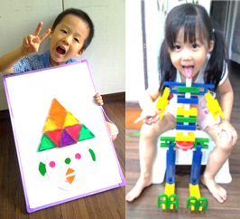
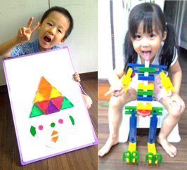

準備好探索了嗎？
 

1. 造型積木 (小班)
啟蒙起點：運用磁鐵積木、LASY 等素材，結合故事繪本引導。
能力培養：語言表達、想像力、自信心建立。


2. 簡易機械 (中班)
工程思維：認識齒輪、槓桿、滑輪，理解「力如何傳遞」。
能力培養：邏輯思考、問題觀察、手眼協調。


3.jpg)


3. 動力機械 (大班+)
機械動起來：馬達、傳動系統、齒輪比與結構穩定性實作。
能力培養：工程分析、問題解決、耐心。


4. WeDo 機器人 (三年級+)
※ 需通過動力機械進階測試
自動化控制：圖像化程式 + 感應器應用。
能力培養：因果關係理解、系統化思考、程式邏輯。


5. EV3 機器人 (四年級+)
競賽級挑戰：進階機械設計、任務型程式、競賽模擬。
能力培養：策略規劃、團隊合作、抗壓性。

6. Scratch 程式 (三年級+)
純程式路徑：純程式邏輯、事件迴圈、遊戲與動畫製作。
能力培養：運算思維、數位創作表達力。
📜 標準 STEM 智慧循環
「樂高機器人不是只學積木或程式，而是透過不斷循環的解決問題過程，培養孩子獨立思考的能力。」
 核心思考訓練
核心思考訓練